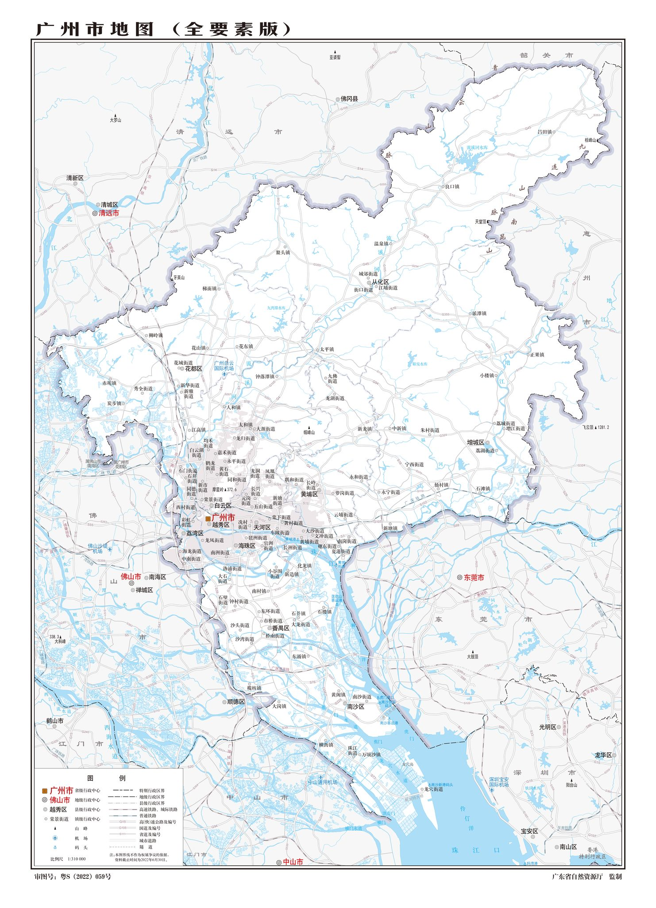

我的广州历史遗迹寻访电子足迹地图
广州足迹
私人寻访档案 · 一张图,走过的广州
编辑模式
☁ 已连接
退出
专题路线
足迹统计
名称
校准点位
新增地点
老城区
全图
指南

地图加载中…
＋
－
暂无记录
已有记录
‹
›
修改地点信息
名称
行政区
分类
历史背景介绍
参观时间
个人感想 / 寻访笔记
仅自己可见(访客看不到这个地点的参观时间、感想和照片)
现场照片
＋ 上传照片
也可以把照片直接拖到这里 · 手机上可直接拍照上传
上传前会自动压缩,并去掉照片里的 GPS 位置和设备信息;若这个地点还没填参观时间,会自动用照片的拍摄日期
删除这个地点
足迹统计
‹ 上一张
下一张 ›
⇤ 前移
后移 ⇥
删除
关闭
进入编辑模式
请输入编辑密码。只有你自己需要这一步,访客不用。
取消
进入
专题路线
跟着一个主题,一站一站地走。
＋ 新建专题
关闭
编辑专题
专题名称
一句话介绍
路线上的地点(按顺序)
添加地点
删除专题
取消
保存
已删除的地点
这些预置地点已从地图上移除,可以随时恢复。
关闭
跳过
上一步
下一步